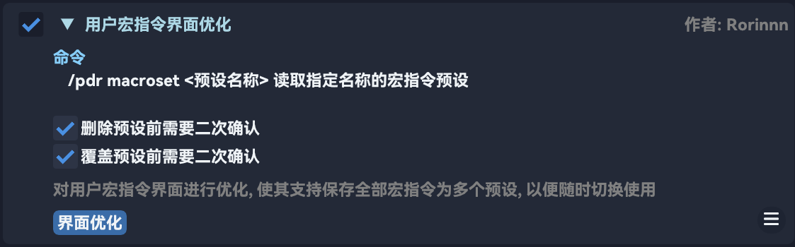
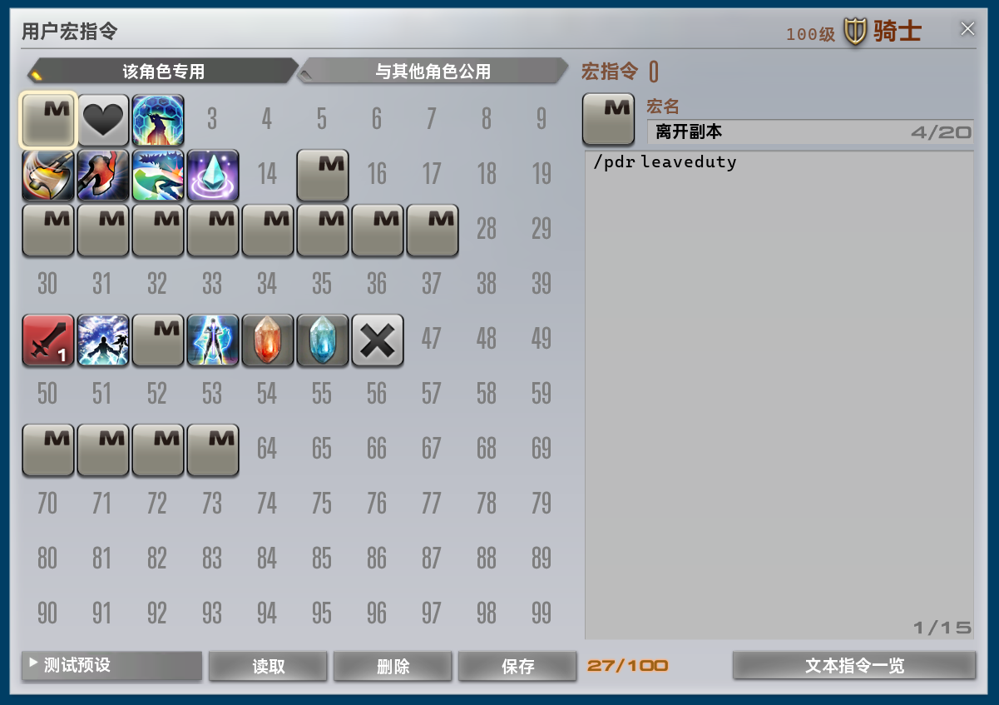
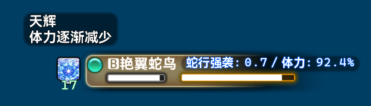
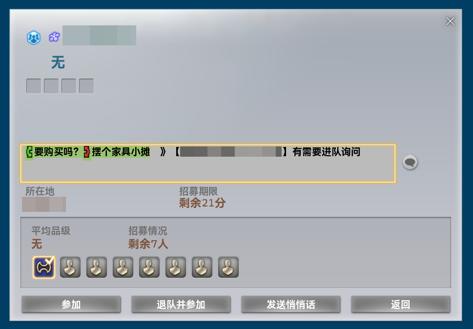

v1.9.8.0 版本更新
- 修复了重新选择字体或修改字号后, 未能及时重建界面所用到的全部字体的问题
- 修复了一处可能导致字体资源泄露的问题
- 支持选择使用 Dalamud 默认字体
- 修复了推荐模块潜在的资源泄露问题
- 修复了模块变更时, 会意外触发多次模块重载的问题
- 优化了本地化功能的性能表现
- 调整了指令补全功能的操作逻辑: 左键 - 保持不变; 右键 - 直接发送对应文本指令
- 修复了内置数字格式化方法部分重载未能检测客户端语言而直接输出中文数字的问题
- 修复了重载模块任务可能会被过早放弃的问题
- 修复了因错误卸载游戏原生界面元素导致的内存释放不及时问题
- 修复了因内部线程不安全的在线数据获取导致的异常抛出问题
- 优化了模块初始化时的性能表现
- 优化了部分模块使用的查表组件的性能表现
用户宏指令界面优化 [界面优化]
Section titled “用户宏指令界面优化 [界面优化]”对用户宏指令界面进行优化, 使其支持保存全部宏指令为多个预设, 以便随时切换使用


自动雇员作业 [界面操作]
Section titled “自动雇员作业 [界面操作]”- 修复了
快捷操作中全部收回 (背包)和全部收回 (雇员)功能失效的问题 出售品列表界面内各物品的第一列编号将始终按照升序显示, 以便检查已上架物品数量
快捷传送面板 [界面优化]
Section titled “快捷传送面板 [界面优化]”- 修复了当前区域有多个任务对象时, 执行任务传送时可能被二次修正至非预期任务对象的问题
- 修复了任务传送二次坐标修正可能被过早触发的问题
自动重定向地面目标类技能 [技能]
Section titled “自动重定向地面目标类技能 [技能]”- 优化了发送的聊天信息与通知消息外观
自动显示周边玩家数量 [一般]
Section titled “自动显示周边玩家数量 [一般]”- 优化了可维护性
玩家右键搜索扩展 [界面优化]
Section titled “玩家右键搜索扩展 [界面优化]”- 修复了
SuMemo网站的链接
自动显示减伤信息 [战斗]
Section titled “自动显示减伤信息 [战斗]”- 修复了减伤信息有时显示有误/残留的问题
目标情报界面优化 [界面优化]
Section titled “目标情报界面优化 [界面优化]”- 优化了状态效果放大功能的显示效果
- 优化了整体性能表现
- 可以部分显示隐藏读条的详细信息
- 修复了当游戏位于后台时登录可能造成程序无响应的问题
敌对列表界面优化 [界面优化]
Section titled “敌对列表界面优化 [界面优化]”- 优化了整体性能表现
- 调整了显示效果
- 重构了配置界面显示效果
- 修复了一处潜在的资源泄露问题
- 新增在界面左侧显示敌对目标身上由自身给予的负面状态效果

-
由于显示逻辑变更, 删除配置项
背景颜色使用自定义文本颜色显示咏唱信息咏唱信息显示黑名单
-
由于显示逻辑变更, 新增配置项
不透明度 (背景)使用自定义文本信息-咏唱
-
现在目标咏唱期间默认也将显示目标的体力百分比
-
新增了模块预览图
自动高亮鼠标 [界面优化]
Section titled “自动高亮鼠标 [界面优化]”- 修复了隐藏游戏界面后鼠标高亮仍然显示的问题
蜃景幻界新月岛助手 [辅助]
Section titled “蜃景幻界新月岛助手 [辅助]”- 优化了
辅助职业列表界面样式 - 修复了
辅助职业列表中特性悬浮提示信息缺失的问题
自动显示危命任务道具收集数量 [战斗]
Section titled “自动显示危命任务道具收集数量 [战斗]”- 修复了界面样式
自动筹备稀有品 [界面操作]
Section titled “自动筹备稀有品 [界面操作]”- 修复了在未安装任何界面模组时出现的元素偏上的问题
自动商店重复购买 [界面操作]
Section titled “自动商店重复购买 [界面操作]”- 修复了无法扫描游戏界面数据的问题
自动云冠群岛采集 [脚本]
Section titled “自动云冠群岛采集 [脚本]”- 新增
以太钻孔机使用次数检测, 在使用失败过多次后将直接跳过使用, 直到完成下一个采集点采集, 避免卡死采集流程 - 当最大采集力 ≥ 850 且已启用
使用强心剂配置项时, 当有任一可用强心剂时, 将不再执行防采集力溢出相关处理逻辑 - 修复了使用
风涡后相关状态标志位未及时复位的问题 - 修复了使用
冲刺技能时出现的空引用异常报错 - 现在在任一任务超时或出现异常时, 会自动尝试重新开始
后台禁止渲染游戏画面 [系统]
Section titled “后台禁止渲染游戏画面 [系统]”- 优化了处理逻辑
治疗职业技能优化 [技能]
Section titled “治疗职业技能优化 [技能]”- 支持了剧情辅助器 NPC、亲信战友 NPC、搭档陆行鸟
快捷退队加入招募 [招募]
Section titled “快捷退队加入招募 [招募]”- 优化了模块性能表现
- 优化了显示效果
导向地图界面显示真实坐标 [界面优化]
Section titled “导向地图界面显示真实坐标 [界面优化]”- 优化了模块性能表现
- 优化了数据更新时机
- 修复了在模块卸载后未能恢复原界面坐标显示文本的问题
快捷天气时间设置 [界面优化]
Section titled “快捷天气时间设置 [界面优化]”- 优化了数据更新时机
好友名单界面优化 [界面优化]
Section titled “好友名单界面优化 [界面优化]”- 修复了
昵称与备注界面中输入框聚焦时始终全选的问题
可选中的招募留言文本 [招募]
Section titled “可选中的招募留言文本 [招募]”- 使用游戏原生界面元素组件重构了模块
